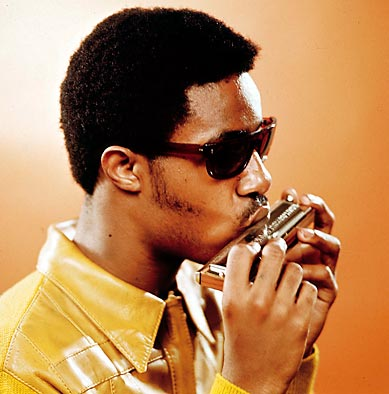
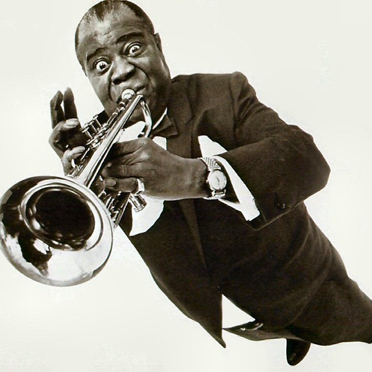
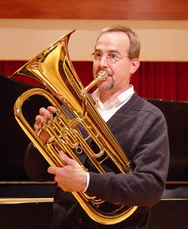
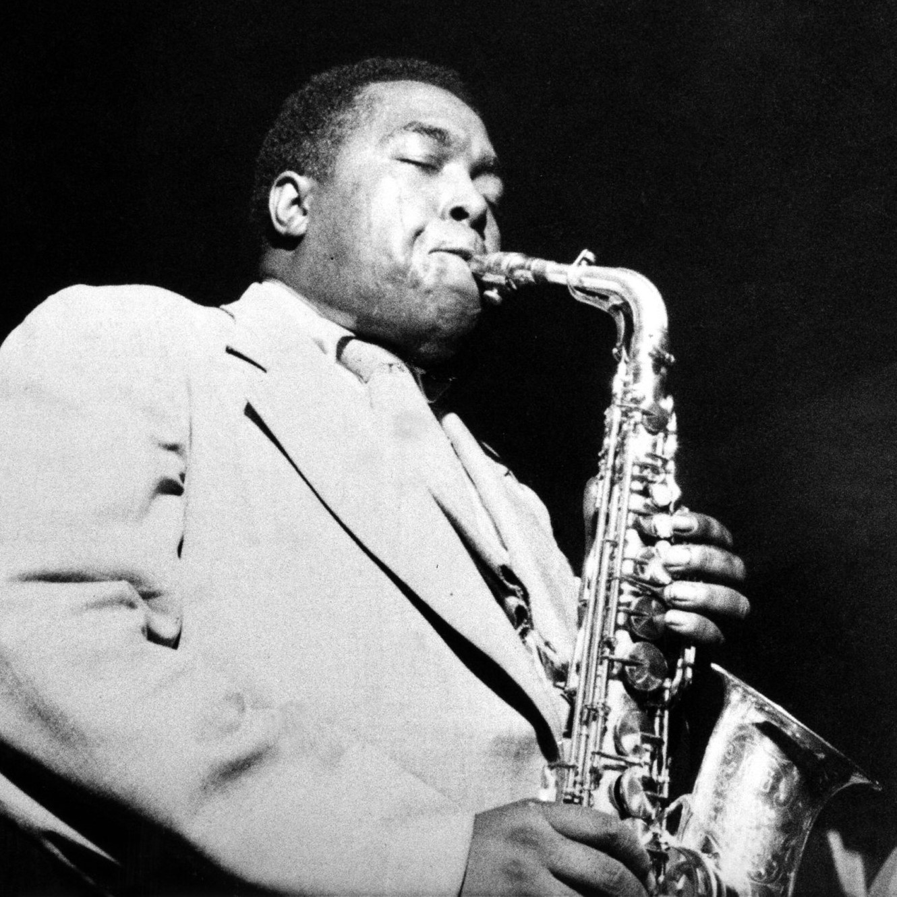
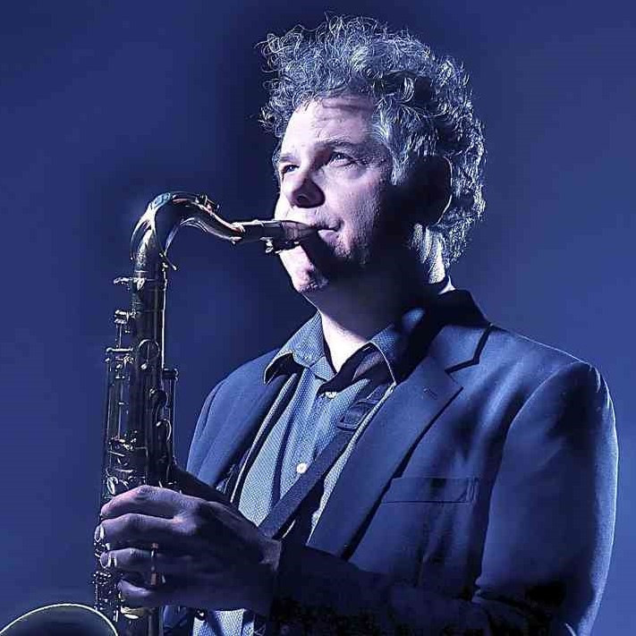
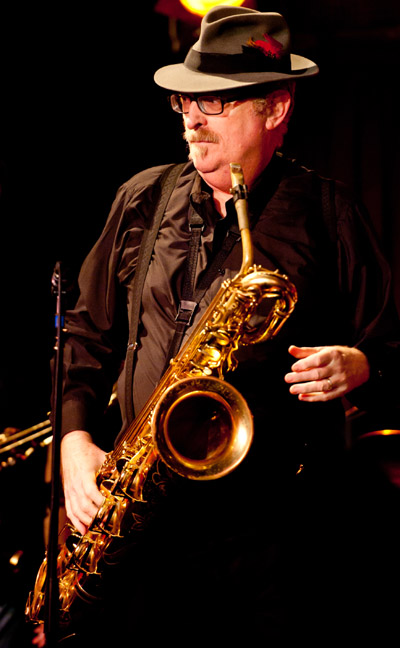
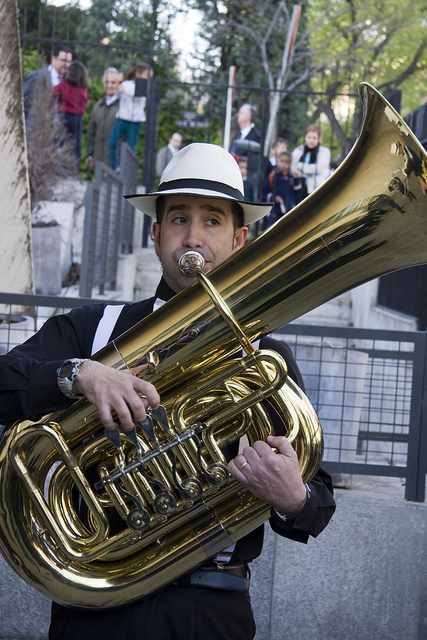

- Harmonica 
- Trumpet 
- Baritone Horn 
- Alto Sax 
- Tenor Sax 
- Baritone Sax 
- Tuba 
- Bass Guitar
I started playing Harmonica when I was around 8 years old. I was tired of playing the Recorder and my parents didn't want to spend a whole lot of money on an instrument. They got me a Hohner® Blues Bender and I quickly learned songs like "Mary had a Little Lamb" and "When the Saints go Marching In". My parents were impressed with how fast I picked up Harmonica and felt I would take music seriously in the future. A year later I would get my first "real" instrument.
^ Back to Top ^
I started playing Trumpet in 4th grade when our school allowed us to pick "real" instruments to play. I think I chose Trumpet because my dad played a ton of Miles Davis when I was in the womb and it just sounded super cool when played. I stuck with playing Trumpet all the way up until my junior year of High School. I played in my schools' Concert Band, Pep Band, and Jazz Band from Middle School to high School.
^ Back to Top ^
When I got to Middle School in the 7th grade our band had too many Trumpet players, so our Teacher asked if anyone would be willing to switch to another instrument. I've always been a team player so I volunteered. The instrument that caught my eye was the Baritone Horn. It looks like a mini Tuba and sounds like a cross between a Trumpet and Trombone. I played the Baritone in the school's Concert Band for all of 7th and 8th grade.
^ Back to Top ^
I started playing Alto Sax for Jazz Band in 7th grade. We had too many Trumpet players again, so again I volunteered to play Alto Sax. Learning sax was a little difficult at first because it was a woodwind instrument and I was only used to playing brasswind instruments. It was really fun to learn though and I've been playing sax in various bands since then.
^ Back to Top ^
I played Tenor Sax a few times while messing around in high school, but nothing serious. Things got serious when I got to college. I auditioned for the Jazz Band at Shoreline Community College on Alto Sax. I didn't make it playing Alto, but my teacher wanted to hear how I would sound on Tenor. He busted out a "players"* Selmer® Mark VI Tenor and had me play some standards. I would go on to play Tenor in the SCC Jazz Band and SCC Saxophone Quartet for the next year.
*A "players" horn is an instrument that looks old and used, but plays wonderfully.
^ Back to Top ^
In high school, around junior year, I discovered we had a really old Baritone Sax in the band storage room. I went to my local music store, picked up some reeds and a harness strap and started jamming out. It was super easy to learn since Alto Sax and Baritone a.k.a. Bari Sax are in the same key of Eb. I ended up playing Bari Sax in my friend Jason's Ska Band. His nickname was Jolly Jason, since he always had a smile on his face. The band was called Jolly and The Ranchers.......no joke.
^ Back to Top ^
Playing Tuba come about when my good friend Taylor suggested I learn since that's what he played and I was ready for another adventure. I talked to my band director and he gave me the green light. The summer before junior year I brought home a spare Tuba and practiced scales and music pretty much all summer. I learned enough to play Tuba in the marching band and concert band my junior and senior year. I also was good enough to be in a drum corps before my senior year. I marched with the Sacramento Mandarins Drum and Bugle Corps in the summer of 2005.
^ Back to Top ^

After learning how to play Tuba and reading music in bass clef I started to pick up bass guitar. I've always loved the sound of the bass. In the beginning I would just practice blues scales and jamming along to old jazz and blues tracks. I bought a Fender® Jazz Bass for my 19th birthday. I had to pawn it for rent money around my 21st birthday though...... ☹
^ Back to Top ^